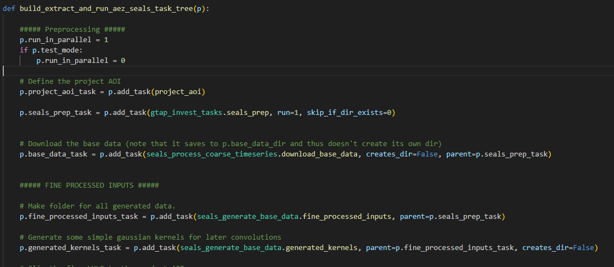
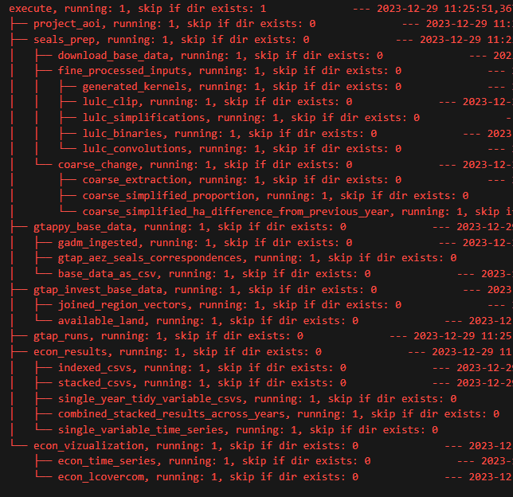
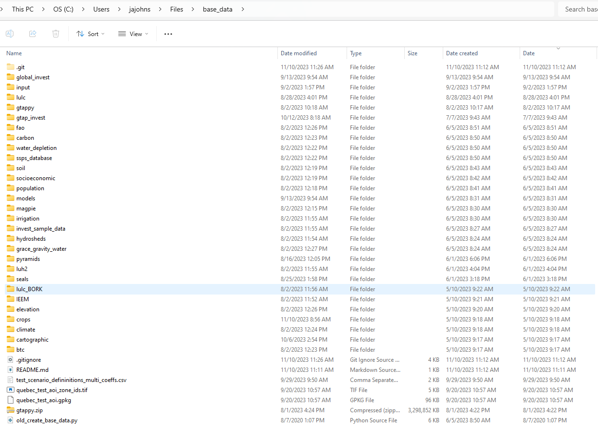
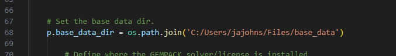
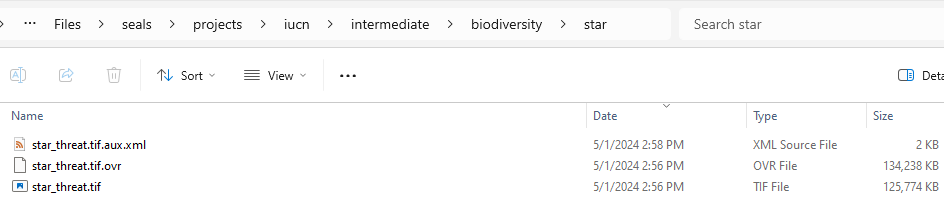
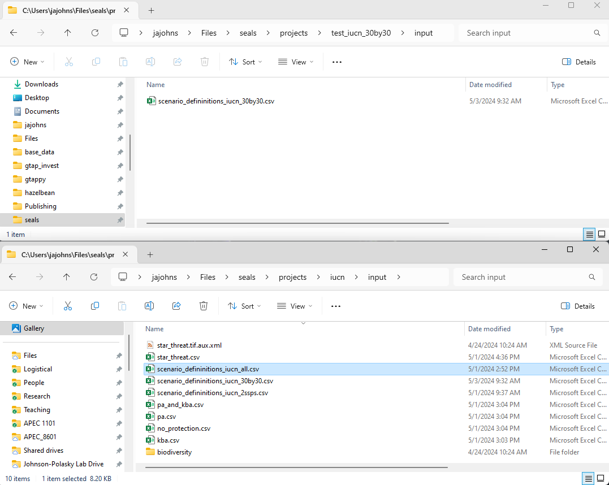
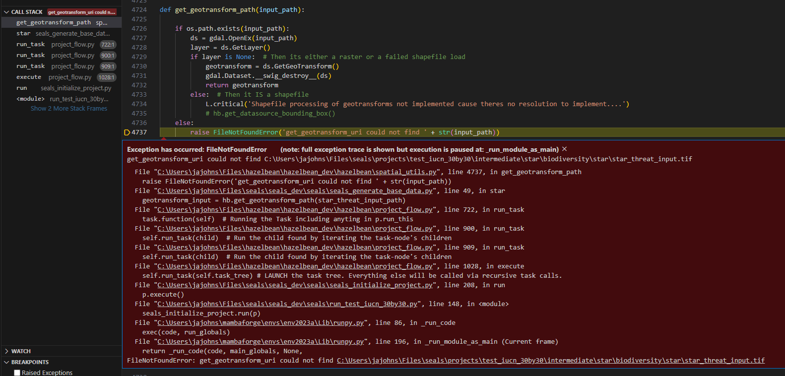
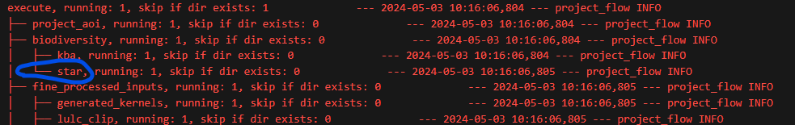
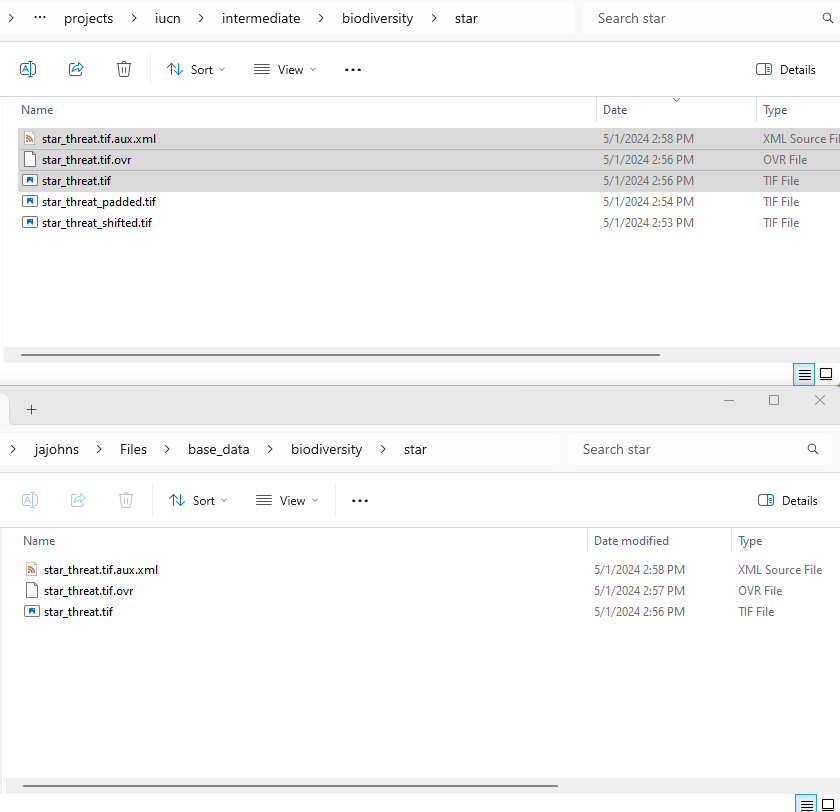

Project Flow
Project Flow is intended to allow a user to flow easily past the different stages of software complexity. A common situation for an academic or a research software engineer (RES) to find themselves in is that they wrote a quick script to answer a specific quesiton, but it turned out to be useful in other context. This can lead to a the script grows and grows until complexity hurts its usefulness. A software developer would then think “oops, I should really make this modular.” ProjectFlow provides several modalities useful to researchers ranging from simple drop-in solution to complex scripting framework. To do this, ProjectFlow manages folders and defines a tree of tasks that can easily be run in parallel where needed and keeping track of task-dependencies. ProjectFlow borrows heavily in concept (though not in code) from the task_graph library produced by Rich Sharp but adds a predefined file structure suited to research and exploration tasks.
Project Flow is intended to flow easily from the situation where you have coded a script that grows and grows until you think “oops, I should really make this modular.” Thus, it has several modalities useful to researchers ranging from simple drop-in solution to complex scripting framework. Similar to the Stages of Complexity page, we will introduce progressively more complex usages, starting with the simples examples and working towards distributed parallelization on complex task-trees. If you would like to skip the stages and go straight to a full-functioning example, go to Standard ProjectFlow run file.
Starter code
We will use the third level of complexity from the previous example as the launching point for how to use ProjectFlow. The code below adds a few additional steps we will work with.
import os
import numpy as np
import gdal
def raster_to_array(raster_input_path):
ds = gdal.Open(yield_per_hectare_raster_path_1)
print("Reading " + raster_input_path +'. This might take a while!')
array = ds.ReadAsArray()
return array
# Load the raster
raster_input_path = 'data/yield.tif' # TODOO[make all these actually point to data in hazelbean]
array = raster_to_array(raster_input_path)
# Set no data values equal to zero
# Method 1 (creates new array)
array_ndv_fix = np.where(array == -9999, 0, array)
# Method 2 (inplace)
array[array == -9999] = 0
# Sum the raster
sum = np.sum(array_ndv_fix)
# Calculate the average value on >0 cells
## First create a binary map of where there is positive value
non_zero = np.where(array_ndv_fix > 0, 1, 0)
## Count those
n_non_zero = np.sum(non_zero)
## Calculate the average
mean = sum / n_non_zero
## Write the value to a file
with open(output_path, rw) as f:
print('Write here.')
print('Sums of layers: ' + str(mean))What is the ProjectFlow and the Task Tree?
ProjectFlow is a Python class that manages a project’s file structure and task tree. It is designed to be a drop-in solution for researchers who have a script that has grown too large and complex to manage. The ProjectFlow object is initialized with a directory, and it will create a file structure within that directory that is designed to be easy to navigate and understand. The ProjectFlow object also manages a task tree, which is a tree of tasks that need to be run in order to complete the project. The task tree is defined by the user, and the ProjectFlow object will manage the execution of the tasks, ensuring that they are run in the correct order and that any dependencies between tasks are satisfied.
To create a task tree NOT FINISHED. Just look at the example.py in docs/examples
Step 1: Substitute in a few pre-built Hazelbean functions
import hazelbean as hb
if __name__ == '__main__':
p = hb.ProjectFlow(r'C:\Files\Research\cge\gtap_invest\projects\feedback_policies_and_tipping_points')In a multi-file setup, in the run.py you will need to import different scripts, such as main.py i.e.:
import visualizations.mainThe script file mainpy can have whatever code, but in particular can include “task” functions. A task function, shown below, takes only p as an agrument and returns p (potentially modified). It also must have a conditional (if p.run_this:) to specify what always runs (and is assumed to run trivially fast, i.e., to specify file paths) just by nature of having it in the task tree and what is run only conditionally (based on the task.run attribute, or optionally based on satisfying a completed function.)
def example_task_function(p):
"""Fast function that creates several tiny geotiffs of gaussian-like kernels for later use in ffn_convolve."""
if p.run_this:
for i in computationally_intensive_loop:
print(i)Important Non-Obvious Note
Importing the script will define function(s) to add “tasks”, which take the ProjectFlow object as an argument and returns it after potential modification.
def add_all_tasks_to_task_tree(p):
p.generated_kernels_task = p.add_task(example_task_function)Iterating over many model assumptions
In many case, such as a standard GTAPPy run, we will iterate over different aggergations and scenarios (now renamed counterfactuals). This is done as expected with code like this:
for aggregation_label in p.aggregation_labels:
for experiment_label in p.experiment_labels:
for n_years_counter, ending_year in enumerate(p.years):
if n_years_counter == 0:
starting_year = p.base_year
else:
starting_year = p.years[n_years_counter - 1]
output_dir = p.get_path(os.path.join(aggregation_label, experiment_label, str(ending_year)))But sometimes, this becomes DEEPLY nested and confusing. SEALS implements an API that reads these nested layers from a CSV. This is defined more fully in the SEALS user guide.
for index, row in p.scenarios_df.iterrows():
seals_utils.assign_df_row_to_object_attributes(p, row)
if p.scenario_type != 'baseline':
for n_years_counter, ending_year in enumerate(p.years):
if n_years_counter == 0:
starting_year = p.base_year
else:
starting_year = p.years[n_years_counter - 1]
current_run_dirs = os.path.join(p.exogenous_label, p.climate_label, p.model_label, p.counterfactual_label)
output_dir = p.get_path(current_run_dirs, str(ending_year))
expected_sl4_path = os.path.join(output_dir, p.counterfactual_label + '_Y' + str(ending_year) + '.sl4')In this scenarios_df, which was loaded from scenarios_csv_path, there are multiple nested for loops implied, for p.exogenous_label, p.climate_label, p.model_label, p.counterfactual_label, each row has a unique value that would have been iterated over with the for loop above. Now, however, we are iterating just over scenario_df rows. Within each row pass, a project-level attribute is assigned via seals_utils.assign_df_row_to_object_attributes(p, row). This is used instead of the nested for loop.
Creating scenarios spreadsheets
Here. Explain why it writes the scenarios_csv FROM CODE rather than downloading it (keeps it up to date as code changes quickly). However, this gets convoluted when you also have to initialize the attributes before you write?!?
# If you want to run SEALS with the run.py file in a different directory (ie in the project dir)
# then you need to add the path to the seals directory to the system path.
custom_seals_path = None
if custom_seals_path is not None: # G:/My Drive/Files/Research/seals/seals_dev/seals
sys.path.insert(0, custom_seals_path)
# SEALS will run based on the scenarios defined in a scenario_definitions.csv
# If you have not run SEALS before, SEALS will generate it in your project's input_dir.
# A useful way to get started is to to run SEALS on the test data without modification
# and then edit the scenario_definitions.csv to your project needs.
# Some of the other test files use different scenario definition csvs
# to illustrate the technique. If you point to one of these
# (or any one CSV that already exists), SEALS will not generate a new one.
# The avalable example files in the default_inputs include:
# - test_three_scenario_defininitions.csv
# - test_scenario_defininitions_multi_coeffs.csvs
p.scenario_definitions_path = os.path.join(p.input_dir, 'scenario_defininitions.csv')
# Set defaults and generate the scenario_definitions.csv if it doesn't exist.
if not hb.path_exists(p.scenario_definitions_path):
# There are several possibilities for what you might want to set as the default.
# Choose accordingly by uncommenting your desired one. The set of
# supported options are
# - set_attributes_to_dynamic_default (primary one)
# - set_attributes_to_dynamic_many_year_default
# - set_attributes_to_default # Deprecated
gtap_invest_utils.set_attributes_to_dynamic_gtap_default(p) # Default option
# # Optional overrides for us in intitla scenarios
# p.aoi = 'RWA'
# gtap_invest_utils.set_attributes_to_dynamic_default(p)
# Once the attributes are set, generate the scenarios csv and put it in the input_dir.
gtap_invest_utils.generate_gtap_invest_scenarios_csv_and_put_in_input_dir(p)
p.scenarios_df = pd.read_csv(p.scenario_definitions_path)
else:
# Read in the scenarios csv and assign the first row to the attributes of this object (in order to setup additional
# project attributes like the resolutions of the fine scale and coarse scale data)
p.scenarios_df = pd.read_csv(p.scenario_definitions_path)
# Because we've only read the scenarios file, set the attributes
# to what is in the first row.
for index, row in p.scenarios_df.iterrows():
seals_utils.assign_df_row_to_object_attributes(p, row)
break # Just get first for initialization.Task Format
Project flow requires a consistent format for tasks. The following is an example of a task that creates a correspondence file from gtap11 regions to gtapaez11 regions. The task itself defined as a function that takes a p object as an argument. This p object is a ProjectFlow object that contains all the project-level variables, manages folders and files, and manages tasks and parallelization. p also includes documentation, which will be written directly into the task directory.
Also note that any project-level attribute defined in between the function start and the if p.run_this: component are the “project level variables” that are fair-game for use in other tasks. These paths are critical for high performance because they enable quick-skipping of completed tasks and determiniation of which parts of the task tree need rerunning.
Tasks should be named as a noun (this breaks Python pep8 style) referencing what will be stored in the tasks output dir. This might feel awkward at first, but it means that the resultant file structure is easier to interpret by a non-EE outsider.
def gtap_aez_seals_correspondences(p):
p.current_task_documentation = """
Create correspondence CSVs from ISO3 countries to GTAPv11 160
regions, and then to gtapaezv11 50ish regions, also put the classification
for seals simplification and luh.
"""
p.gtap11_region_correspondence_input_path = os.path.join(p.base_data_dir, 'gtappy', 'aggregation_mappings', 'GTAP-ctry2reg.xlsx')
p.gtap11_region_names_path = os.path.join(p.base_data_dir, 'gtappy', 'aggregation_mappings', 'gtap11_region_names.csv')
p.gtap11_gtapaez11_region_correspondence_path = os.path.join(p.base_data_dir, 'gtappy', 'aggregation_mappings', 'gtap11_gtapaez11_region_correspondance.csv')
if p.run_this:
"logic here"Automatic Directory Organization via Tasks
Hazelbean automatically defines directory organization as a function of the task tree. When the ProjectFlow object is created, it takes a directory as its only required input. This directory defines the root of the project. The other directory that needs to be referenced is the base_data_dir. When you initialize the p object, it notes this:
Created ProjectFlow object at C:\Users\jajohns\Files\gtap_invest\projects\cwon from script C:\Users\jajohns\Files\gtap_invest\gtap_invest_dev\gtap_invest\run_cwon.py with base_data set at C:\Users\jajohns\Files/base_data
In the run file, the following line generates the task tree:
gtap_invest_initialize_project.build_extract_and_run_aez_seals_task_tree(p)
Which points to a builder function in the initialize file, looking something like this:

This would generate the following task tree:

Two notations are especially useful within this task tree.
- Within the function that defines a task, p.cur_dir points to the directory of that task. So for instance, the last task defined in the image above, in its code, you could reference p.cur_dir, and it would point to
<project_root>/econ_visualization/econ_lcovercom - Outside of a given function’s code, you can still refer to paths that were defined from within the functions code, but now (because you are outside the function) it is given a new reference. Using the example above, you could reference the same directory with
p.econ_lcovercom_dirwhere the p attribute is named exactly as <function_name>_dir
All of this setup enable another useful feature: automatic management of file generation, storage and downloading. This is done via the hazelbean function:
useful_path = hb.get_path(relative_path)This function will iteratively search multiple locations and return the most “useful” one. By default, the relative_path variable will first joined with the p.cur_dir. If the file exists, it returns it. If not, it checks the next location, which is p.input_dir, and then p.base_data_dir. If it doesn’t find it anywhere, it will attempt to download it from google cloud (NYI) and save it in the p.cur_dir. If it is not available to download on google cloud, then it treats the path as something we will be generating within the task, and thus, get_path returns the first option above, namely joining the relative_path with p.cur_dir.
One important use-case that needs explaining is for tasks that generate files that will eventually be placed in the base_data_dir. The goal is to enable easy generation of it to the intermediate directory in the appropriate task_dir, but then have the ability to copy the files with the exact same relative path to the base_data_dir and have it still be found by p.get_path(). To do this, you will want to choose a path name relative to the tasks’ cur_dir that matches the desired directory relative to the base data dir. So, for example, we include 'gtappy', 'aggregation_mappings' at the beginning of the relative path for in the intermediate directory in the appropriate task_dir, but then we also will want to copy the files with the exact same relative path to the base_data_dir and have it still be found by p.get_path(). To do this, you will want to choose a path name relative to the tasks’ cur_dir that matches that in the base_data_dir, for example <base_data_dir>/'gtappy/aggregation_mappings/gadm_adm0.gpkg',
template_path = p.get_path(os.path.join('gtappy', 'aggregation_mappings', 'gadm_adm0.gpkg')) It can be hard deciding what counts as a base_data_generating task or not, but generally if it is a file that will not be used by other projects, you should not treat it as a base_data_generating task. Instead, you should just make it relative to the cur_dir (or wahtever makes sense), as below:
output_path = p.get_path(os.path.join(aggregation_label + '_' + experiment_label + '_' + header + '_stacked_time_series.csv'))One additional exception to the above is if you are calling get_path outside of a task/task_tree. One common example is in the run file before you build the task tree. In this case, the default_dirs will not make sense, and so you need to specify it manually as here:
p.countries_iso3_path = p.get_path(os.path.join('cartographic', 'gadm', 'gadm_adm0_10sec.gpkg'), possible_dirs=[p.input_dir, p.base_data_dir])Validation of files
ProjectFlow is designed to calculate very fast while simultaneously validating that everything is approximately correct. It does this by checking for the existence of files (often combined with hb.get_path()). For example
p.gadm_r263_gtapv7_r251_r160_r50_correspondence_vector_path = p.get_path(os.path.join('gtap_invest', 'region_boundaries', 'gadm_r263_gtapv7_r251_r160_r50_regions.gpkg'))
if not hb.path_exists(p.gadm_r263_gtapv7_r251_r160_r50_correspondence_vector_path):
hb.log('Creating ' + p.gadm_r263_gtapv7_r251_r160_r50_correspondence_vector_path)
"computationally expensive thing here."ProjectFlow very carefully defines whether or not you should run something based on the existence of specific paths. Usually this is just checking for each written path and only executing the code if it’s missing, but in some cases where lots of files are created, it’s possible to take the shortcut of just checking for the existence of the last-created path.
Eliminating redundant calculation across projects
If you have a time consuming task that, or example, writes to
big_file_path = hb.get_path('lulc', 'esa', 'seals7', 'convolutions', '2017', 'convolution_esa_seals7_2017_cropland_gaussian_5.tif' )In this example, suppose you needed to create this file via your create_convolutions() task or something. When you first do this, it obviously won’t exist yet, so get_path() will join that relative path in the p.cur_dir location. If you run the ProjectFlow again, it will see it’s there and then instantly skip recalcualting it.
In addition to the 5 repos plus the EE repo, there is a managed base data set stored in teh same location

A ProjectFlow object must have a base_data_dir set (I think…). This is because the p.get_path() will look in this folder for it, and/or will download to it.

Python Tips and Conventions
For large files that take a long time to load, use a string->dataframe/dataset substitution as below. Make a LOCAL variable to contain the loaded object, and have that be assigned to the correct project-level path string. In subsequent usages, check type and if it’s still a string, then it hasn’t been loaded yet, so do that. I’m debating making it a project level variable trick
gadm = p.gadm_adm0_vector_input_path
# Just load it on first pass
if type(gadm) is str:
gadm = hb.read_vector(p.gadm_adm0_vector_input_path)Common example of promoting one project-level output to the base_data
Here we document the case where you’ve run a project which involved generating an output you want to use in a subsequent project.
For this example, we will consider the project IUCN, which among other things pre-processed some key data, like kbas.tif and star_threat.tif. There are large global rasters and it would slow down our script to run them again in each new project. Thus, we want to promote them to the base_data_dir. Looking at the folders in the IUCN project, we see a pyramidal output star_threat.tif. We want to promote this to the base_data_dir and use it in other project.

Our goal now is to clone the IUCN project into a new project we can modify. First, let us create the new project directory called test_iucn_30by30. In that folder, also create a new folder called input. Here, you will copy over the scenario_definitions file used in the IUCN project, which was named scenario_definitions_iucn_all.csv. After copying, rename it something sensible in the new location like scenario_definitions_iucn_30by30.csv, as shown below.

Now create a new Python run file. Go back to the code directory (Files/seals/seals_dev) and copy run_iucn.py in the same directory and rename it run_test_iucn_30by30.py. Note the word test her which means it is going to be a non-global, fast running script to prove the new code works. Eventually a new run file run_iucn_30by30.py will be created when we know it works. In the new file, rename project_name = 'test_iucn_30by30'. Also in the code, edit the line below to match the name of your new scenario_definitions file.
p.scenario_definitions_path = os.path.join(p.input_dir, 'scenario_defininitions_iucn_30by30.csv')By copying the run_iucn.py file, we have ensured that we load the set of tasks we built for that project, specifically:
seals_initialize_project.build_iucn_task_tree(p)Besides these two changes, the code will be identical to the standard SEALS run, except for the extra IUCN-specific tasks. You can inspect that function to see the logic of an IUCN-style SEALS run:
def build_iucn_task_tree(p):
# Define the project AOI
p.project_aoi_task = p.add_task(project_aoi)
# Process the IUCN-specific data to be used in SEALS
p.biodiversity_task = p.add_task(seals_generate_base_data.biodiversity)
p.kbas_task = p.add_task(seals_generate_base_data.kba, parent=p.biodiversity_task)
p.star_task = p.add_task(seals_generate_base_data.star, parent=p.biodiversity_task)
##### FINE PROCESSED INPUTS #####
# Make folder for all generated data.
p.fine_processed_inputs_task = p.add_task(seals_generate_base_data.fine_processed_inputs)
# Generate some simple gaussian kernels for later convolutions
p.generated_kernels_task = p.add_task(seals_generate_base_data.generated_kernels, parent=p.fine_processed_inputs_task, creates_dir=False)
# Clip the fine LULC to the project AOI
p.lulc_clip_task = p.add_task(seals_generate_base_data.lulc_clip, parent=p.fine_processed_inputs_task, creates_dir=False)Without any other modifications, run this new run file. It will (intentionally) fail and give an error message like this:

We’re going to use this example to learn about the debugger, the “call stack”, and ALSO what’s going on with our new project. First, look in the upper left of the image at the call stack. When you run in debug mode and it hits an exception, it will report the error message (red text) but also will freeze execution at the point it stopped and report the exact set of (potentially nested) functions that were called right before it stopped. These nested functions are the call stack. You can click on any one to see the code corresponding to different layers of what was called. The topmost function is often the most relevant one to what went wrong (like in this case get_geotransform_path() didn’t find the path it was given) but sometimes a deeper function gives you more information about what’s actually wrong.
With this information, we can understand what’s going on with our new project. We see in the error message that it is not finding star_threat_input.tif in the project’s input directory. This is desired because our point of this exercise is to NOT have to reprocess that input (and instead have our new project use the output of the task that would have called this). One would be tempted at this point to simply change the task tree to not call this function, but we actually do want this project to have access to this file, and moreover, we want it to work whether or not someone has generated the file. ProjectFlow is designed to solve this type of situation because any time a computationally-intensive function is called, it will check if the output has already been generated (and thus will skip the computation). To make this logic work across projects, we simply move the outputs of the task to our base data dir. Specifically, copy the file referenced, along with its containing folders relative to the intermediate directory and place those files/folders in the base data. If your tasks were defined correctly, these extra directories also define the canonical file location in the base data (and also the remote server for when we get to that!).
To do this, we need to figure out what file our code was actually looking to recreate. For this, we actually need to use the call stack to go one level deeper. Click on the star element in the call stack. Here we will see the following code which led to the actual error.
def star(p):
star_threat_input_path = p.get_path('biodiversity', 'star', 'star_threat_input.tif')
star_threat_path = p.get_path('star_threat.tif')
if not hb.path_exists(star_threat_path):
# WTF apparently this was all shifted by a random amount.?
shift = 90.0 - 83.6361111111106226
geotransform_input = hb.get_geotransform_path(star_threat_input_path)
geotransform = list(geotransform_input)
# Write a new file that corrects the weird shift without modifying the original file.
star_threat_shifted_path = p.get_path('star_threat_shifted.tif')
if geotransform[3] == 90.0:
geotransform[3] -= shift
if not hb.path_exists(star_threat_shifted_path):
hb.set_geotransform_to_tuple(star_threat_input_path, geotransform, output_path=star_threat_shifted_path)
# INTERSTING IMPLICATION: Because the cur_dir is already representing the base_data nesting location, adding it again doesn't work makes it be repeated 2x
star_threat_padded_path = p.get_path('star_threat_padded.tif')
if not hb.path_exists(star_threat_padded_path):
hb.fill_to_match_extent(star_threat_shifted_path, p.aoi_ha_per_cell_fine_path, output_path=star_threat_padded_path, fill_value=-9999., remove_temporary_files=False)
star_threat_path = p.get_path('star_threat.tif')
if not hb.path_exists(star_threat_path):
hb.make_path_global_pyramid(star_threat_padded_path, output_path=star_threat_path, verbose=True)In the above, we see several things. First, the p.get_path() function defines the same set of “indexed data” directories you saw above pointing to the input raster. We also see the expected output file, defined in:
star_threat_path = p.get_path('star_threat.tif')This get_path() function doesn’t define any indexed data directories because it is defined by the task tree! Specifically, p.cur_dir will already be defined to be in the ‘biodiversity/star’ subdirectories. We can see this in the task_tree printout.

In ProjectFlow, all computationally intensive tasks must be inside of a check to see if it’s already been run (and sometimes, that the output validates). This happens in this task because everything besides just defining file paths is inside of following conditional:
if not hb.path_exists(star_threat_path):Regardless, we can see that this file, star_threat.tif will be (one of) the outputs of this task. This is the one that we want to move into the base data so future functions can find it. Go into the project’s intermediate directory and navigate to the right task. Here we see the file we want to promote. Copy this file, along with all of the indexed folders (in this case, ‘biodiversity/star’) into the root of the base_data_dir. This means relative to the two different file roots of base_data_dir and intermediate_dir will have the same relative file structure thereafter. This can be seen in the image below which shows the file copied into base_data. Notice that I didn’t copy any of the intermediate files produced by the task.

Now, with this file in place, you can rerun the run_test_iucn_30by30.py file and the p.get_path() functions will find the desired file when it is checking in the base_data! There will be a new directory created for the task at intermediate/biodiversity/star but that will be empty. The project should run much faster now by not having to create the file while still ensuring the user has access to it.
Now that you have a new working project. Your likely next step is to create a new task tree builder function, perhaps named build_test_iucn_30by30_task_tree(p). This function will define the tasks that are unique to this project. You can copy the tasks from the IUCN project and modify them as needed. You can also add new tasks that are unique to this project.